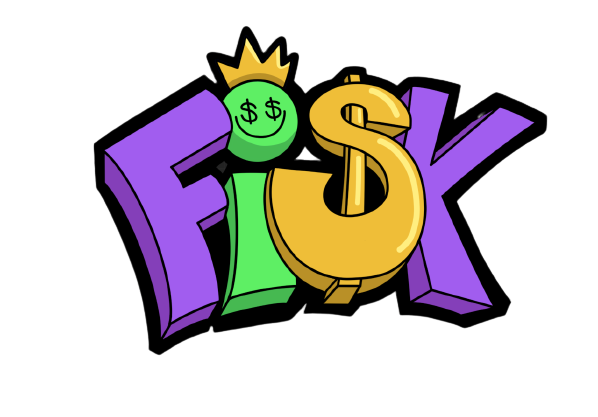

Notice du jeu
En savoir plus
Dossier de gestion de projet
Cahier des charges
Images
Dossier de gestion de projet
Vous pouvez accéder au dossier de gestion de projet en cliquant sur le lien ci-dessous :
Accéder au dossier